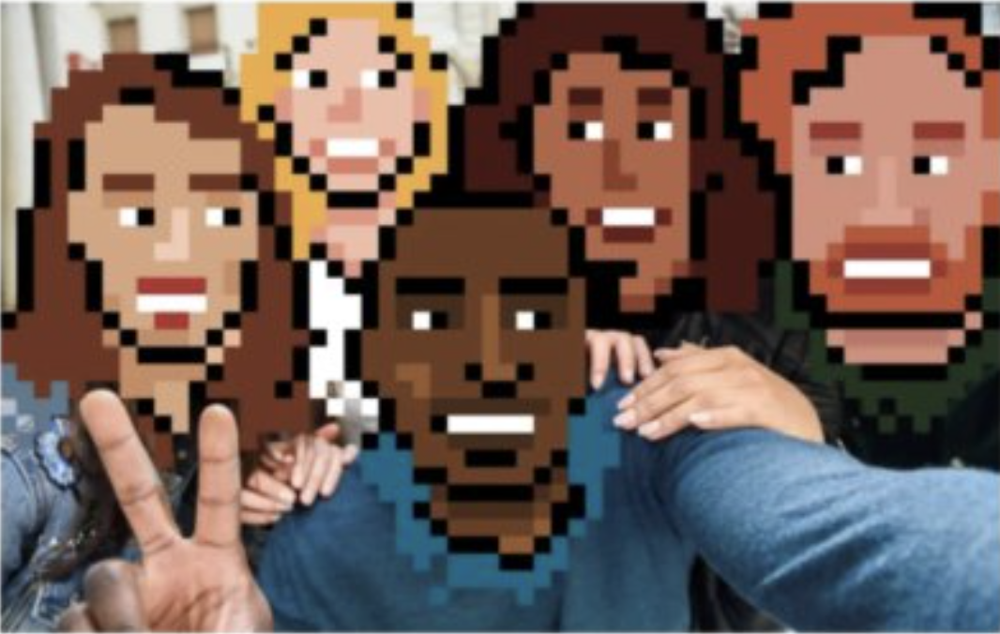
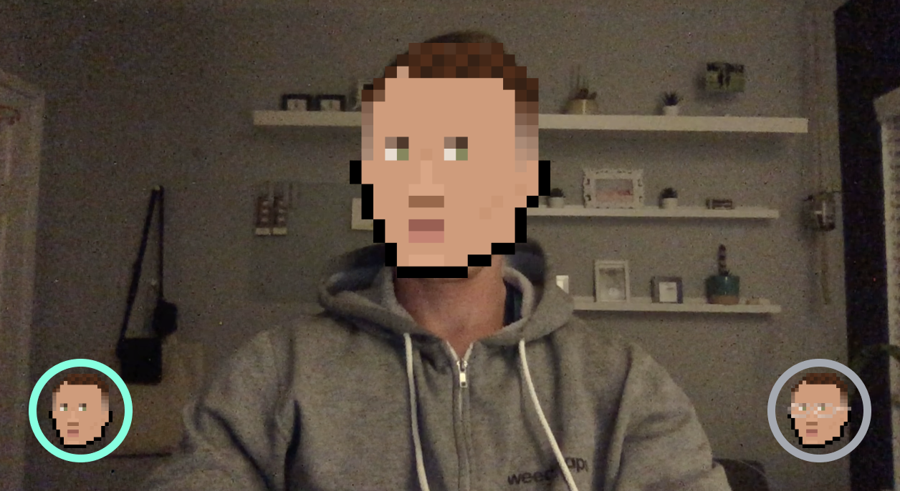

Project 3
Face Filter
- Create an interactive system (a game, a story, a performance, etc) that relies on the recognition and tracking of the real-world objects by a machine learning system (ML5js). Explore the possibilities of the technology:
- Q1: What it can and cannot do? how subtle can the variations be?
- A1: The only limits are my creativity and my coding ability. There are infinite amount of variations.
- Q2: What is easy and what is hard to do with the existing tech?
- A2: It is hard for me to code since I do not have alot of time or experience doing it.
- Q3: Starting with your big idea outline a backup plan - what is plan B to scale it down? What is plan C?
- A3: Plan A: Create a face filter using PoseNet. Allow the user to toggle the face filter on or off and swap between two filters by touching their wrist to a Ui button. Plan B: Create the face filter using PoseNet but remove the toggle button functionality. Plan C: Create a object that is positioned onscreen using PoseNet.
- Q4: What will work if nothing else works?
- A4: I can repurpose code from our lessons or something I find on the net
Process
Inspired by Coinbase NFT marketing creative, I want to create a face filter that applies my personal NFT artwork over the users face by using the PoseNet framework.
First I created a visual design concept Ui that I want my Project to look like. This will help me talk through the process with other people who will be resources to help me accomplish my vision. I reached out to developers on Fiver to help me accomplish this Project. The developer flaked out and I was only able to accomplish Plan B.
The final version of my project was a partial success. I was able to accomplish Plan B with limited help. My instructor helped me resize the face filter as the user gets closer or further from the camera based on the eye distance proximity.